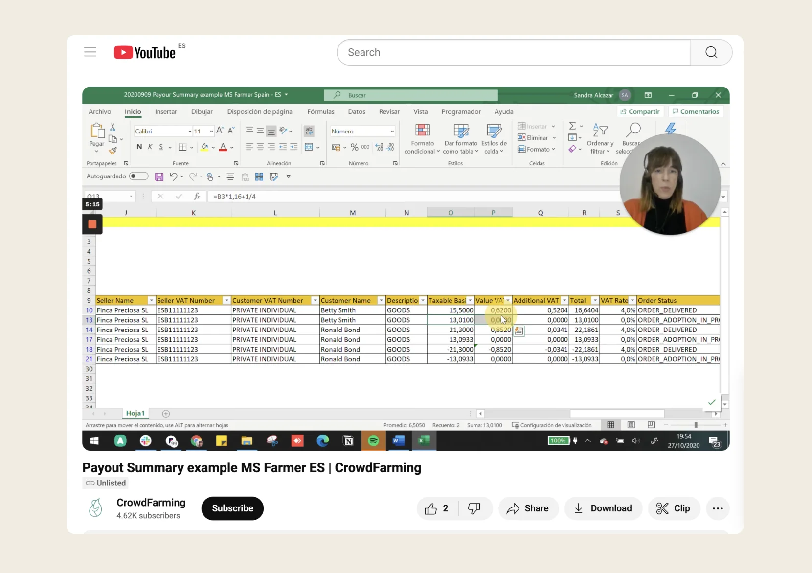
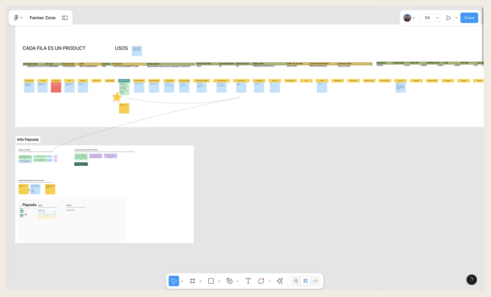
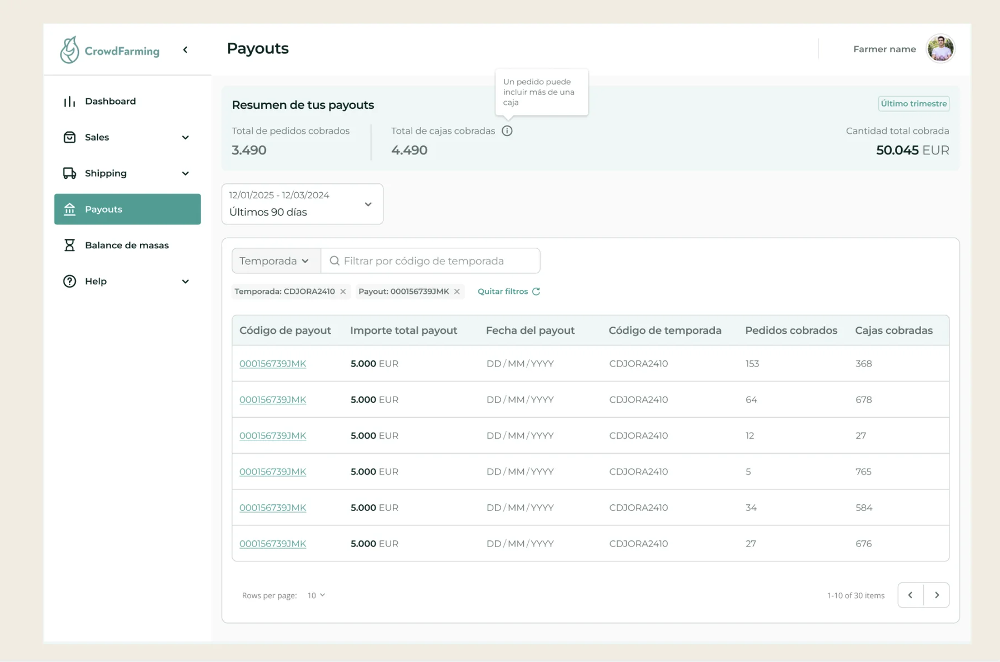
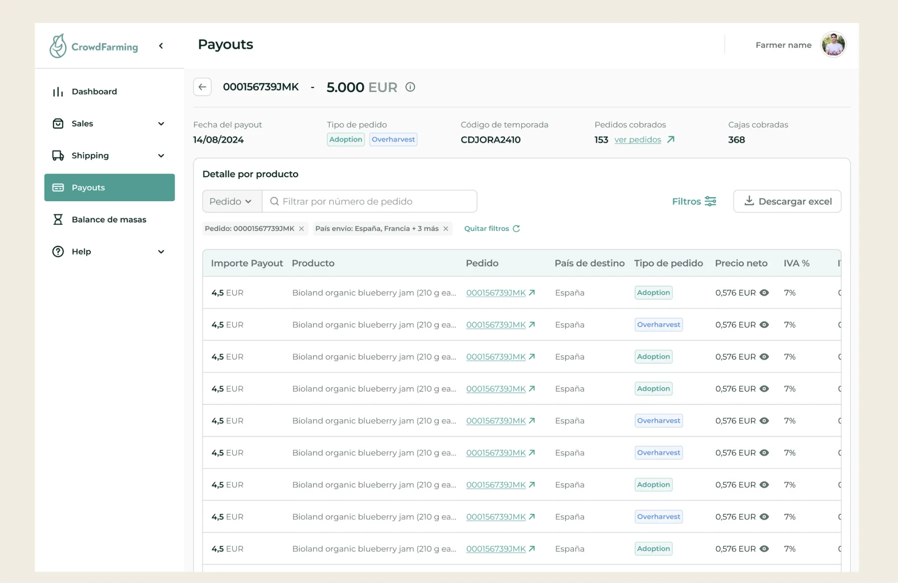

FarmerZone Payouts
From a giant Excel file to a clear, transparent and traceable payouts section for farmers.

Context
The FarmerZone is the private portal for every farmer who sells through the CrowdFarming platform. It is their central dashboard to manage the key activities of their business, such as:
- Tracking sales and adoptions
- Reviewing orders and upcoming shipments

The challenge
Every month, the finance team sent farmers a giant Excel file with the detailed breakdown of their payout.

The spreadsheet was so complex that a YouTube tutorial was needed to explain it to farmers.

How could we bring this process into the FarmerZone?
Research
- First, I studied the giant Excel file column by column.
- My goal was to find a simpler way to group and show all that information.
- I think I watched the tutorial video about 30 times ▶️.
- Finding out which problems (beyond the obvious ones) farmers had with it.

Key findings
The solution
A clear, actionable payouts section

- The page starts with a summary dashboard that gives farmers a quick overview of their most important income data.
- Below it there is a detailed, searchable table of every payout, bringing the full transparency and traceability that the old Excel lacked.
- Farmers can filter by season or date range, so they have full control to find exactly the information they need.
The payout detail page

- This screen offers full traceability: it shows every product included in the payout and links it to its original order.
- At the top there is a summary of all the included orders and a “Download to Excel” option for their own bookkeeping.
Full price breakdown

For the highest level of detail, farmers can click on any product and see its full price breakdown.
Connecting orders with payouts

The Payouts project revealed an opportunity to redesign the whole “Orders” section.